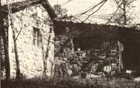
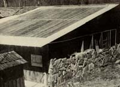
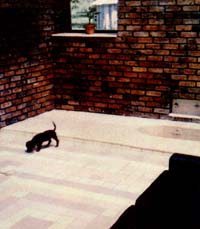

Is it practical for the "average" family to use solar energy to heat its house here in the United States? My answer is an emphatic yes. And I base that answer on three verifiable facts: [1] a typical U.S. home for a family of four contains approximately 1,600 square feet of living space, [2] about one hundred and thirty million Btu's of heat energy are needed to keep that typical building warm for one year, yet [3], on the average, six times this amount of heat energyin the form of solar radiationfalls on the structure's roof annually.
Of course, if we follow this line of reasoning to its logical conclusion, we find that folks living here in my home state of Georgiapart of the so-called "Sun Belt"are even more blessed than that. On the average, our homes receive ten times (not just six) as much solar radiation every year as we need to keep them warm. And that, at least in my opinion, makes this section of the U.S. what I call "maximum solar engineering feasibility country".
In other words, if any part of the nation should be able to heat its houses entirely or almost entirely with the sun, this is it. And solar heat will work here in Georgia ... even as far north in the state as you can go. I know, because I have a small cabin up in the tiny mountain town of Blue Ridge (just a few miles south of the Tennessee/Georgia line), and I've been successfully operating what I call a "solar roof" on that cabin ever since March of 1974.
The capture and use of solar energy for space heating has been going on for a long, long time. As this magazine has frequently pointed out (see, for instance, the David Wright Interview in MOTHER NO. 47), many of the planet's earlier civilizations tempered and warmed their homes with the sun merely by the way in which the structures were positioned and the material in those buildings (often above or stone) was used.
I've even heard of ancient temples that were heated by small streams of water which had first been diverted through sunwarmed beds of rock. I like ideas like thatideas which are simple, yet effectiveand I've tried to incorporate such concepts into my own solar energy designs.
I've worked in the construction industry for the past ten years and I began studying the way we build houses in this country ten years before that. After two decades of gathering information on the subject, I've come to the conclusion that the typical "modern" U.S. home could hardly be designed to waste more energy than it does. Nor to deliver less real living value than it does.
For example: Walk into the bedroom, living roomeven kitchenof almost any new house built in nearly any part of the country, and what will you find? Even if the sun is shining brightly outside, you'll probably have to turn on a light if you want to see really well inside the room.
Wouldn't it make better sense to just let the sun shine in? And if you'll go that far, what's wrong with designing some solar heat storage into the living room floor? Or doing away with a few of the wooden walls inside the building in favor of climbing cucumbers or other towering plants? (Most walls are merely privacy screens anyway. So why not "grow" walls which will provide that screening... and feed you too?)
Hey! Maybe we're onto something. Instead of designing our houses so stupidly that we even have to light them artificially during the day ... let's let enough sunshine into our homes to light them ... to heat them ... to turn them into greenhouses! Let's let our houses not only shelter us ... but warm and feed us too! Let's fill 'em with plants we can eat ... plants that will add moisture and oxygen to the air ... plants that the elderly, the handicapped, the young, all of us can enjoy right through the winter!
And let's construct those homes, as much as possible, from native materials and design each one so its greenhouse section can feed excess heat to the rest of the building on cold, clean winter days ... and vice versa the following nights and on overcast days.
It was this kind of reasoning that led me to retrofit a greenhouse to our small mountain cabin nearly four years ago. And to face the cottage and the east and west sides of the greenhouse with 12 inches of native rock (the north side of the greenhouse attaches to the cabin and the south side is a six-inch-thick frame wall). And to insulate the east and west walls of the greenhouse with three and one-half inches of fiberglass (the south side is insulated with six inches of the material). And to add brick walls (the bricks were salvaged from burned-out buildings) to the greenhouse's interior (the mass of these wallsinside the insulation acts. as a "thermal flywheel" and evens out day and night temperatures in the building ... see the Andy Davis Interview in MOTHER NO. 46, the David Wright Interview in MOTHER NO. 47, and the article about the Savell construction system in MOTHER NO. 48). And, perhaps most important of all, it was this line of reasoning which led me to finish off my cottage's addition with a heating system I've come to call the Solar Roof (even though part of the system is a water storage tank under the greenhouse).
Very briefly, the Solar Roof I've designed [1] allows enough solar energy into our cabin's attached greenhouse during the winter for plants to grow with a little "extra" warmth left over to circulate from the added-on hothouse to the cottage, and [2] heats watermore than we know what to do with! during the spring, summer, and fall when all our plants are moved outside and we use the attached structure as an extra room.
I hope you digested that last paragraph very carefully (if not, please read it again) ... because it says far more than a casual glance might indicate.
The trouble with most greenhouses, you know, is that they're wonderful during the winter ... but virtually useless -and return nothing on their investment-in the summer. My greenhouse doesn't have this problem because I've gone out of my way to make the add-on structure a multiseason, multi-purpose room. As a result, the attached building contributes something of value -whether food, heat, moisture and oxygen in the air, the mere presence of green growing things during the winter, light, or plain ole physical space - to our lives every day of the year.
The real key to this year-round versatility is a special roofing panel of my own construction. The panel is designed [1] to form a covering for a room or house that is just as permanent and weathertight as any other roofing material. In addition to that, howeverand unlike other roofing materials-the specially fabricated panels [2] admit controlled amounts of sunlight into a room or building, [3] will heat water when it's circulated through a network of tubing that is built into the panels, and [4] will warm air when it's blown through the cavities which surround the network of tubing. Finally [5], the roofing panels can be retrofitted to almost any structure that you might want to solar temper, turn into a winter greenhouse, light naturally, or use to heat water with the sun's rays.
Topping our cabin's add-on room with my Multi-Purpose Solar Roofing Panels, then, was the first big step we took toward making the attached structure contribute so much to the cottage's living comfort and versatility.
We make our Multi-Purpose Roofing Panels work for us In a number of ways. First, of course, the roof keeps rain, dust, falling leaves, etc., out of the room it covers and otherwise acts like an ordinary roof. And second, it allows approximately 40% of the sunlight which falls on it to pass through into the greenhouse/spare room below.
Third, we can pipe water into the bottom of the roofing panel's network of tubing ... pump that water up through the plumbing ... and allow the liquid to exit from the top of the tubes. Naturallysince the setup is designed to do exactly thatthe water is heated as it passes through this part of its circuit. (Depending on the seasonspring, summer, or fall35 to 50 gallons per hour of 54° water going INTO the panels comes OUT at a temperature of 130° to 160°F.) The heated water is next piped to a water heater in the cottage. When that tank is full, the excess goes to a solar heat storage tank built into the floor of the greenhouse. And when that reservoir can't take any more, the hot water is ducted as needed through the walls of a "double digester" methane production unit to maintain optimum digestion temperatures in the waste- into- fuel-and-fertilizer processor. The water can then be jettisoned back into the spring from which it originally came or pumped back up through the roofing panels for another circuit, depending on our needs or desires at the time. Any or all of this circulation, of course, can be controlled automatically by temperature sensors ... and a special sensor protects the system from freeze damages by automatically dumping all the water from the circuits whenever the temperature in the pipes drops to 36°F.
Fourth, air from the greenhouse can enter the roofing panels along the add-on room's south wall. The air is then heated as it rises through the cavities in the panels ... until it finally arrives in a 2 X 20-foot "collection chamber" along the roof's peak. At that point, the hot air is pulled down into the greenhouse again by a thermostatically controlled fan.
All the above possibilitiesand the manner in which we can manipulate some movable insulation panels in the greenhouse/spare room and/or shuffle heat from the add-on structure to the main part of the cottage and back againgive us a tremendous freedom of choice. The attached building can be a spare room. A hydroponic garden. A hothouse. A conservatory. We can keep the mass of water under the add-on room at a steady 54° year round, if we like, by running a constant 75 gallons per hour of spring water (fresh out of the ground) through it. Or we can circulate that water through the solar roof first in any one of several ways (closed circuit, one-time-through, 35 gallons per minute, 50 gallons per minute, etc.) to maintain the storage tank at any temperature from 54° up to the mid-70's.
When we started this projectback in February of 1974we were setting out [1] to retrofit an existing cottage with an addon structure which [2] was versatile enough to use either as a spare room or any one of several kinds of greenhouse/ gardening spaces.
In addition, we wanted [3] to use as much native stone and recycled materials-in this case, brick-as possible in the remodeling job ... and [4] use them in ways which contributed to both the looks and the energy efficiency of the completed project.
We also hoped our retrofit [5] could greatly improve our standard of living while [6] making major contributions to our family's income in the form of "free" heat, light, atmospheric conditioning, food, etc.
Finally [7], we didn't want to pay a fortune for all this. In fact, we had a sneaking suspicion from the beginning that we could fabricate our "dream" additionno matter how exotic its design turned out to befor roughly the same square-foot-age cost as so-called "conventional" (energy wasteful) structures.
We think we've done all that and more. And now, after living with (and profiting from!) our add-on room for four years, we're more convinced than ever that attached, multifunctional greenhouses are the wave of the future ... and that solar heating systems definitely are practical for the average" family right now.
EDITOR'S NOTE: A booklet of plans and instructions for the fabrication, installation, anti use of the Roy Dycus Multi-Purpose Solar Roof Panels is available for $15 from Mr. Roy Dycus, Rt. 2, Box 121-F, Blue Ridge, Ga. 30513.
|
 This view of the west side (if the remodeled Dycus cabin quite dramatically shows the exceptional use that the Dycus family has made, of the native stone in their corner of northern Georgia. The original cottage has been faced with the material... as were both the east and the west sides of the greenhouse/spare room the family added to the cabin. The stone walls on the original cottage and the sides of the greenhouse are all about 12 inches thick. The inside surfaces of the greenhouse walls are covered with three and one-half inches of insulation ... which has been covered, in turn, with recycled brick salvaged from some old burned-out buildings. Note that the south wall of the added-on greenhouse (the wall away from the main house) is not faced with stone. Instead, it's six inches thick ... filled with insulation ... and covered with wooden siding. |
 The 20 X 20-foot square ""heat collecting core""the part of the roof through which water and air circulatewas clearly visible as the Dycus greenhouse neared completion |
 Note the tiled floor (laid down in the old ""Step Around the Mountain"" quilt pattern) of the Dycus attached greenhouse. Note, too, the sunken bathtub, brick walls, and ""grow light"" installed in the room. The economical fluorescent lighting fixtures are occasionally turned an to supplement the room's natural light on overcast winter days, and on some nights |
|
The MultiPurpose Solar Roof Panel that makes the Dycus system work. Note the network of plastic pipe sandwiched between the two sheets of corrugated fiberglass |
This schematic shows how add-on greenhouse/spare room was attached to Dycus cottage and illustrates the relationship of the addition's roof to the room itself, the solar heat storage reservoir underneath, and the methane-producing digester installed along the sun room's south wall. Water circulation up through the roof (where it's heated) to the cabin's water heater to the solar reservoir under the sun room to the waste digester and then either back through the roof or off to the creek from whence it originally came is shown in blue. Red indicates the circulation of air from the green house/spare room up through the roof (where itlike the circulating wateris heated) and back down to the greenhouse/spare room The system's operation is actually far less complicated than even this simple drawing makes it seem |
A series of 4""-thick solid styrofoam ""blocks"" suspended just under the Dycus solar roof can be hinged down to let the sun in ... or swung back up any time to convert the greenhouse into a spare room with a well-insulated ceiling. |